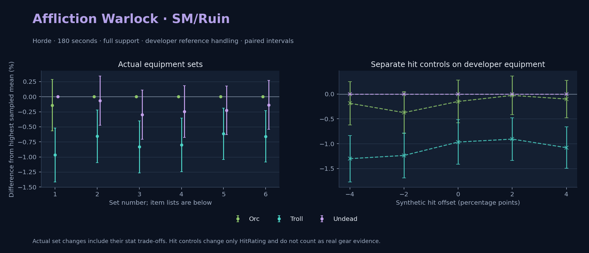

Horde · Orc / Troll / Undead

Pets / guardians: Imp, Voidwalker, Succubus, Felhunter · 56.9 DPS (8.7% of total). Reference: Orc, developer equipment, 180 seconds and full support. Pet choices remain those of the developer build.
WoWSims developer · Pre-raid (baseline fallback)
Unimplemented item effects: [{"id": 14153, "name": "Robe of the Void", "effects": ["Heal your pet for 600."]}]
Unimplemented enchant or active set effects: [{"id": 183, "pieces": 4, "effects": ["When struck in combat has a 2% chance of causing the attacker to flee in terror for 2s. Can only occur once every 60 sec."]}]
180 seconds, full support and original developer references. Hit below is generic sheet melee / spell hit; school and talent bonuses can be attached directly to spells.
| Race | DPS | Gap and interval | Generic hit | Replay |
|---|---|---|---|---|
| Undead | 652.95 | +0.000% ± 0.000 | 7.0% / 7.0% | Native input · Website JSON |
| Orc | 652.03 | -0.141% ± 0.427 | 7.0% / 7.0% | Native input · Website JSON |
| Troll | 646.63 | -0.968% ± 0.448 | 7.0% / 7.0% | Native input · Website JSON |
| Slot | Item | ID | Enchant |
|---|---|---|---|
| Head | Dreadmist Mask | 16698 | |
| Neck | Beads of Ogre Mojo | 22149 | |
| Shoulder | Dreadmist Mantle | 16701 | |
| Back | Arcanoweave Cloak | 272411 | |
| Chest | Robe of the Void | 14153 | |
| Wrist | Dreadmist Bracers | 16703 | |
| Hands | Dreadmist Wraps | 16705 | |
| Waist | Dreadmist Belt | 16702 | |
| Legs | Dreadmist Leggings | 16699 | |
| Feet | Dreadmist Sandals | 16704 | |
| Ring 1 | Jereman's Bauble | 275738 | |
| Ring 2 | Advisor's Ring | 19518 | |
| Trinket 1 | Weakness Analyzer | 272438 | |
| Trinket 2 | Jewel of the Guard Captain | 270225 | |
| Main hand | Darkspear Insurgent's Spellblade | 272083 | |
| Off hand | Truesilver Conduit | 249455 | |
| Ranged / relic | Lunar Wand | 15283 |
Published ranked alternatives · Published pre-raid
Recorded source replacements: [{"slot": "feet", "from": 11822, "to": 275606, "publishedAlternativeRank": 1, "publishedEpDelta": -1.7, "reason": "First published alternative compatible with the current WoWSims database, class, faction and occupied slots."}]
180 seconds, full support and original developer references. Hit below is generic sheet melee / spell hit; school and talent bonuses can be attached directly to spells.
| Race | DPS | Gap and interval | Generic hit | Replay |
|---|---|---|---|---|
| Orc | 763.81 | +0.000% ± 0.000 | 7.7% / 7.7% | Native input · Website JSON |
| Undead | 763.30 | -0.067% ± 0.408 | 7.7% / 7.7% | Native input · Website JSON |
| Troll | 758.80 | -0.656% ± 0.437 | 7.7% / 7.7% | Native input · Website JSON |
| Slot | Item | ID | Enchant |
|---|---|---|---|
| Head | Felcloth Hood | 14111 | Arcanum of Focus |
| Neck | Archlight Talisman | 15856 | Enchant Necklace - Spell Power |
| Shoulder | Mantle of the Timbermaw | 19050 | |
| Back | Arcanoweave Cloak | 272411 | |
| Chest | Robe of Winter Night | 14136 | Mystic Rugged Armor Kit |
| Wrist | Runecloth Cuffs | 254123 | Enchant Bracer - Greater Spellpower |
| Hands | Gloves of Spell Mastery | 14146 | Enchant Gloves - Minor Haste |
| Waist | Belt of the Archmage | 18405 | |
| Legs | Ghostweave Pants | 14144 | Arcanum of Focus |
| Feet | Venomspew Footpads | 275606 | Mystic Rugged Armor Kit |
| Ring 1 | Maiden's Circle | 13001 | |
| Ring 2 | Maiden's Circle | 13001 | |
| Trinket 1 | Weakness Analyzer | 272438 | |
| Trinket 2 | Rune of the Guard Captain | 19120 | |
| Main hand | Sageblade | 22383 | |
| Off hand | Spirit of Aquementas | 11904 | Enchant Off-Hand - Superior Intellect |
| Ranged / relic | Greater Eternal Wand | 249237 |
Published one-slot hit alternative · Published pre-raid
One source-listed alternative; at least 80% of the source slot score retained. Reported hit selects the contrast; only native stats determine simulation outcomes. This is an experimental combination, not an endorsed best set.
Recorded source replacements: [{"slot": "feet", "from": 11822, "to": 275606, "publishedAlternativeRank": 1, "publishedEpDelta": -1.7, "reason": "First published alternative compatible with the current WoWSims database, class, faction and occupied slots."}]
180 seconds, full support and original developer references. Hit below is generic sheet melee / spell hit; school and talent bonuses can be attached directly to spells.
| Race | DPS | Gap and interval | Generic hit | Replay |
|---|---|---|---|---|
| Orc | 763.00 | +0.000% ± 0.000 | 7.0% / 7.0% | Native input · Website JSON |
| Undead | 760.71 | -0.299% ± 0.409 | 7.0% / 7.0% | Native input · Website JSON |
| Troll | 756.64 | -0.833% ± 0.432 | 7.0% / 7.0% | Native input · Website JSON |
| Slot | Item | ID | Enchant |
|---|---|---|---|
| Head | Felcloth Hood | 14111 | Arcanum of Focus |
| Neck | Archlight Talisman | 15856 | Enchant Necklace - Spell Power |
| Shoulder | Mantle of the Timbermaw | 19050 | |
| Back | Arcanoweave Cloak | 272411 | |
| Chest | Robe of Winter Night | 14136 | Mystic Rugged Armor Kit |
| Wrist | Runecloth Cuffs | 254123 | Enchant Bracer - Greater Spellpower |
| Hands | Gloves of Spell Mastery | 14146 | Enchant Gloves - Minor Haste |
| Waist | Belt of the Archmage | 18405 | |
| Legs | Ghostweave Pants | 14144 | Arcanum of Focus |
| Feet | Venomspew Footpads | 275606 | Mystic Rugged Armor Kit |
| Ring 1 | Maiden's Circle | 13001 | |
| Ring 2 | Maiden's Circle | 13001 | |
| Trinket 1 | Weakness Analyzer | 272438 | |
| Trinket 2 | Uther's Strength | 11302 | |
| Main hand | Sageblade | 22383 | |
| Off hand | Spirit of Aquementas | 11904 | Enchant Off-Hand - Superior Intellect |
| Ranged / relic | Greater Eternal Wand | 249237 |
Published one-slot hit alternative · Published pre-raid
One source-listed alternative; at least 80% of the source slot score retained. Reported hit selects the contrast; only native stats determine simulation outcomes. This is an experimental combination, not an endorsed best set.
Recorded source replacements: [{"slot": "feet", "from": 11822, "to": 275606, "publishedAlternativeRank": 1, "publishedEpDelta": -1.7, "reason": "First published alternative compatible with the current WoWSims database, class, faction and occupied slots."}]
180 seconds, full support and original developer references. Hit below is generic sheet melee / spell hit; school and talent bonuses can be attached directly to spells.
| Race | DPS | Gap and interval | Generic hit | Replay |
|---|---|---|---|---|
| Orc | 764.71 | +0.000% ± 0.000 | 8.7% / 8.7% | Native input · Website JSON |
| Undead | 762.81 | -0.248% ± 0.430 | 8.7% / 8.7% | Native input · Website JSON |
| Troll | 758.58 | -0.801% ± 0.444 | 8.7% / 8.7% | Native input · Website JSON |
| Slot | Item | ID | Enchant |
|---|---|---|---|
| Head | Felcloth Hood | 14111 | Arcanum of Focus |
| Neck | Archlight Talisman | 15856 | Enchant Necklace - Spell Power |
| Shoulder | Mantle of the Timbermaw | 19050 | |
| Back | Arcanoweave Cloak | 272411 | |
| Chest | Robe of Winter Night | 14136 | Mystic Rugged Armor Kit |
| Wrist | Runecloth Cuffs | 254123 | Enchant Bracer - Greater Spellpower |
| Hands | Gloves of Spell Mastery | 14146 | Enchant Gloves - Minor Haste |
| Waist | Belt of the Archmage | 18405 | |
| Legs | Ghostweave Pants | 14144 | Arcanum of Focus |
| Feet | Venomspew Footpads | 275606 | Mystic Rugged Armor Kit |
| Ring 1 | Blessed Band of Light | 272407 | |
| Ring 2 | Maiden's Circle | 13001 | |
| Trinket 1 | Weakness Analyzer | 272438 | |
| Trinket 2 | Rune of the Guard Captain | 19120 | |
| Main hand | Sageblade | 22383 | |
| Off hand | Spirit of Aquementas | 11904 | Enchant Off-Hand - Superior Intellect |
| Ranged / relic | Greater Eternal Wand | 249237 |
Published ranked alternatives · Published pre-raid
Recorded source replacements: [{"slot": "shoulder", "from": 227808, "to": 19050, "publishedAlternativeRank": 1, "publishedEpDelta": -10.9, "reason": "First published alternative compatible with the current WoWSims database, class, faction and occupied slots."}, {"slot": "waist", "from": 228190, "to": 18405, "publishedAlternativeRank": 1, "publishedEpDelta": -6.8, "reason": "First published alternative compatible with the current WoWSims database, class, faction and occupied slots."}, {"slot": "feet", "from": 11822, "to": 275606, "publishedAlternativeRank": 1, "publishedEpDelta": -1.7, "reason": "First published alternative compatible with the current WoWSims database, class, faction and occupied slots."}]
Unimplemented item effects: [{"id": 14153, "name": "Robe of the Void", "effects": ["Heal your pet for 600."]}]
180 seconds, full support and original developer references. Hit below is generic sheet melee / spell hit; school and talent bonuses can be attached directly to spells.
| Race | DPS | Gap and interval | Generic hit | Replay |
|---|---|---|---|---|
| Orc | 775.44 | +0.000% ± 0.000 | 7.9% / 7.9% | Native input · Website JSON |
| Undead | 773.68 | -0.227% ± 0.402 | 7.9% / 7.9% | Native input · Website JSON |
| Troll | 770.67 | -0.616% ± 0.425 | 7.9% / 7.9% | Native input · Website JSON |
| Slot | Item | ID | Enchant |
|---|---|---|---|
| Head | Felcloth Hood | 14111 | Arcanum of Focus |
| Neck | Archlight Talisman | 15856 | Enchant Necklace - Spell Power |
| Shoulder | Mantle of the Timbermaw | 19050 | |
| Back | Arcanoweave Cloak | 272411 | |
| Chest | Robe of the Void | 14153 | Mystic Rugged Armor Kit |
| Wrist | Netherpearl Cuffs | 254067 | Enchant Bracer - Greater Spellpower |
| Hands | Gloves of Spell Mastery | 14146 | Enchant Gloves - Minor Haste |
| Waist | Belt of the Archmage | 18405 | |
| Legs | Ghostweave Pants | 14144 | Arcanum of Focus |
| Feet | Venomspew Footpads | 275606 | Mystic Rugged Armor Kit |
| Ring 1 | Maiden's Circle | 13001 | |
| Ring 2 | Maiden's Circle | 13001 | |
| Trinket 1 | Weakness Analyzer | 272438 | |
| Trinket 2 | Frozen Heart of the Mountain | 249469 | |
| Main hand | Sageblade | 22383 | |
| Off hand | Spirit of Aquementas | 11904 | Enchant Off-Hand - Superior Intellect |
| Ranged / relic | Brilliant Wand | 249385 |
Published one-slot hit alternative · Published pre-raid
One source-listed alternative; at least 80% of the source slot score retained. Reported hit selects the contrast; only native stats determine simulation outcomes. This is an experimental combination, not an endorsed best set.
Recorded source replacements: [{"slot": "shoulder", "from": 227808, "to": 19050, "publishedAlternativeRank": 1, "publishedEpDelta": -10.9, "reason": "First published alternative compatible with the current WoWSims database, class, faction and occupied slots."}, {"slot": "waist", "from": 228190, "to": 18405, "publishedAlternativeRank": 1, "publishedEpDelta": -6.8, "reason": "First published alternative compatible with the current WoWSims database, class, faction and occupied slots."}, {"slot": "feet", "from": 11822, "to": 275606, "publishedAlternativeRank": 1, "publishedEpDelta": -1.7, "reason": "First published alternative compatible with the current WoWSims database, class, faction and occupied slots."}]
Unimplemented item effects: [{"id": 14153, "name": "Robe of the Void", "effects": ["Heal your pet for 600."]}]
180 seconds, full support and original developer references. Hit below is generic sheet melee / spell hit; school and talent bonuses can be attached directly to spells.
| Race | DPS | Gap and interval | Generic hit | Replay |
|---|---|---|---|---|
| Orc | 775.08 | +0.000% ± 0.000 | 8.9% / 8.9% | Native input · Website JSON |
| Undead | 774.02 | -0.137% ± 0.406 | 8.9% / 8.9% | Native input · Website JSON |
| Troll | 769.96 | -0.659% ± 0.427 | 8.9% / 8.9% | Native input · Website JSON |
| Slot | Item | ID | Enchant |
|---|---|---|---|
| Head | Felcloth Hood | 14111 | Arcanum of Focus |
| Neck | Archlight Talisman | 15856 | Enchant Necklace - Spell Power |
| Shoulder | Mantle of the Timbermaw | 19050 | |
| Back | Arcanoweave Cloak | 272411 | |
| Chest | Robe of the Void | 14153 | Mystic Rugged Armor Kit |
| Wrist | Netherpearl Cuffs | 254067 | Enchant Bracer - Greater Spellpower |
| Hands | Gloves of Spell Mastery | 14146 | Enchant Gloves - Minor Haste |
| Waist | Belt of the Archmage | 18405 | |
| Legs | Ghostweave Pants | 14144 | Arcanum of Focus |
| Feet | Venomspew Footpads | 275606 | Mystic Rugged Armor Kit |
| Ring 1 | Blessed Band of Light | 272407 | |
| Ring 2 | Maiden's Circle | 13001 | |
| Trinket 1 | Weakness Analyzer | 272438 | |
| Trinket 2 | Frozen Heart of the Mountain | 249469 | |
| Main hand | Sageblade | 22383 | |
| Off hand | Spirit of Aquementas | 11904 | Enchant Off-Hand - Superior Intellect |
| Ranged / relic | Brilliant Wand | 249385 |
The same declared pool is available to every race. Each race keeps its best validation-sample set with its screening-selected racial policy. Separate samples confirm that choice, with fresh precision samples near the practical-loss boundary. Gaps use the highest sampled mean under that same duration, support and reference treatment as their reference. A zero reference gap does not certify a race; the main matrix also allows uncertainty in the leader.
| Pool | Seconds | Support | References | Race | DPS | Gap and interval | Racial policies / mana | Selected set | Generic hit: melee / spell | Replay |
|---|---|---|---|---|---|---|---|---|---|---|
| published-pre-raid | 60 | full | developer | Troll | 804.45 | +0.000% ± 0.00020,000 iterations | developer / developer / developerMana waits 0.0s | published-warlock-sm-ruin-horde-6a5cf3d69f1aa043-higher-hit | 8.9% / 8.9% | Input · Result · Stats |
| published-pre-raid | 60 | full | developer | Orc | 802.81 | -0.205% ± 0.13920,000 iterations | developer / developer / developerMana waits 0.0s | published-warlock-sm-ruin-horde-6a5cf3d69f1aa043-higher-hit | 8.9% / 8.9% | Input · Result · Stats |
| published-pre-raid | 60 | full | developer | Undead | 799.44 | -0.624% ± 0.14220,000 iterations | developer / developer / developerMana waits 0.0s | published-warlock-sm-ruin-horde-6a5cf3d69f1aa043-higher-hit | 8.9% / 8.9% | Input · Result · Stats |
| published-pre-raid | 60 | full | explicit | Troll | 804.45 | +0.000% ± 0.00020,000 iterations | developer / developer / developerMana waits 0.0s | published-warlock-sm-ruin-horde-6a5cf3d69f1aa043-higher-hit | 8.9% / 8.9% | Input · Result · Stats |
| published-pre-raid | 60 | full | explicit | Orc | 802.81 | -0.205% ± 0.13920,000 iterations | developer / developer / developerMana waits 0.0s | published-warlock-sm-ruin-horde-6a5cf3d69f1aa043-higher-hit | 8.9% / 8.9% | Input · Result · Stats |
| published-pre-raid | 60 | full | explicit | Undead | 799.44 | -0.624% ± 0.14220,000 iterations | developer / developer / developerMana waits 0.0s | published-warlock-sm-ruin-horde-6a5cf3d69f1aa043-higher-hit | 8.9% / 8.9% | Input · Result · Stats |
| published-pre-raid | 60 | self | developer | Troll | 716.07 | +0.000% ± 0.00020,000 iterations | developer / developer / developerMana waits 0.7s | published-warlock-sm-ruin-horde-6a5cf3d69f1aa043 | 7.9% / 7.9% | Input · Result · Stats |
| published-pre-raid | 60 | self | developer | Orc | 714.34 | -0.243% ± 0.14420,000 iterations | developer / developer / developerMana waits 0.6s | published-warlock-sm-ruin-horde-6a5cf3d69f1aa043 | 7.9% / 7.9% | Input · Result · Stats |
| published-pre-raid | 60 | self | developer | Undead | 708.87 | -1.007% ± 0.14720,000 iterations | developer / developer / developerMana waits 0.5s | published-warlock-sm-ruin-horde-6a5cf3d69f1aa043 | 7.9% / 7.9% | Input · Result · Stats |
| published-pre-raid | 60 | self | explicit | Troll | 716.07 | +0.000% ± 0.00020,000 iterations | developer / developer / developerMana waits 0.7s | published-warlock-sm-ruin-horde-6a5cf3d69f1aa043 | 7.9% / 7.9% | Input · Result · Stats |
| published-pre-raid | 60 | self | explicit | Orc | 714.34 | -0.243% ± 0.14420,000 iterations | developer / developer / developerMana waits 0.6s | published-warlock-sm-ruin-horde-6a5cf3d69f1aa043 | 7.9% / 7.9% | Input · Result · Stats |
| published-pre-raid | 60 | self | explicit | Undead | 708.87 | -1.007% ± 0.14720,000 iterations | developer / developer / developerMana waits 0.5s | published-warlock-sm-ruin-horde-6a5cf3d69f1aa043 | 7.9% / 7.9% | Input · Result · Stats |
| published-pre-raid | 180 | full | developer | Orc | 772.84 | +0.000% ± 0.00020,000 iterations | oncd / developer / developerMana waits 0.9s | published-warlock-sm-ruin-horde-6a5cf3d69f1aa043 | 7.9% / 7.9% | Input · Result · Stats · Website JSON |
| published-pre-raid | 180 | full | developer | Undead | 772.19 | -0.084% ± 0.09620,000 iterations | developer / developer / developerMana waits 0.9s | published-warlock-sm-ruin-horde-6a5cf3d69f1aa043-higher-hit | 8.9% / 8.9% | Input · Result · Stats · Website JSON |
| published-pre-raid | 180 | full | developer | Troll | 766.76 | -0.787% ± 0.09620,000 iterations | developer / developer / developerMana waits 0.8s | published-warlock-sm-ruin-horde-6a5cf3d69f1aa043 | 7.9% / 7.9% | Input · Result · Stats · Website JSON |
| published-pre-raid | 180 | full | explicit | Orc | 772.84 | +0.000% ± 0.00020,000 iterations | oncd / developer / developerMana waits 0.9s | published-warlock-sm-ruin-horde-6a5cf3d69f1aa043 | 7.9% / 7.9% | Input · Result · Stats |
| published-pre-raid | 180 | full | explicit | Undead | 772.19 | -0.084% ± 0.09620,000 iterations | developer / developer / developerMana waits 0.9s | published-warlock-sm-ruin-horde-6a5cf3d69f1aa043-higher-hit | 8.9% / 8.9% | Input · Result · Stats |
| published-pre-raid | 180 | full | explicit | Troll | 766.76 | -0.787% ± 0.09620,000 iterations | developer / developer / developerMana waits 0.8s | published-warlock-sm-ruin-horde-6a5cf3d69f1aa043 | 7.9% / 7.9% | Input · Result · Stats |
| published-pre-raid | 180 | self | developer | Orc | 684.55 | +0.000% ± 0.00020,000 iterations | oncd / developer / developerMana waits 1.7s | published-warlock-sm-ruin-horde-6a5cf3d69f1aa043 | 7.9% / 7.9% | Input · Result · Stats |
| published-pre-raid | 180 | self | developer | Undead | 682.26 | -0.334% ± 0.09520,000 iterations | developer / developer / developerMana waits 1.6s | published-warlock-sm-ruin-horde-6a5cf3d69f1aa043-higher-hit | 8.9% / 8.9% | Input · Result · Stats |
| published-pre-raid | 180 | self | developer | Troll | 679.08 | -0.798% ± 0.09720,000 iterations | developer / developer / developerMana waits 1.7s | published-warlock-sm-ruin-horde-6a5cf3d69f1aa043 | 7.9% / 7.9% | Input · Result · Stats |
| published-pre-raid | 180 | self | explicit | Orc | 684.55 | +0.000% ± 0.00020,000 iterations | oncd / developer / developerMana waits 1.7s | published-warlock-sm-ruin-horde-6a5cf3d69f1aa043 | 7.9% / 7.9% | Input · Result · Stats |
| published-pre-raid | 180 | self | explicit | Undead | 682.26 | -0.334% ± 0.09520,000 iterations | developer / developer / developerMana waits 1.6s | published-warlock-sm-ruin-horde-6a5cf3d69f1aa043-higher-hit | 8.9% / 8.9% | Input · Result · Stats |
| published-pre-raid | 180 | self | explicit | Troll | 679.08 | -0.798% ± 0.09720,000 iterations | developer / developer / developerMana waits 1.7s | published-warlock-sm-ruin-horde-6a5cf3d69f1aa043 | 7.9% / 7.9% | Input · Result · Stats |
| published-pre-raid | 300 | full | developer | Undead | 768.38 | +0.000% ± 0.00020,000 iterations | developer / developer / developerMana waits 0.6s | published-warlock-sm-ruin-horde-6a5cf3d69f1aa043-higher-hit | 8.9% / 8.9% | Input · Result · Stats |
| published-pre-raid | 300 | full | developer | Orc | 768.27 | -0.016% ± 0.07920,000 iterations | developer / developer / developerMana waits 0.6s | published-warlock-sm-ruin-horde-6a5cf3d69f1aa043 | 7.9% / 7.9% | Input · Result · Stats |
| published-pre-raid | 300 | full | developer | Troll | 763.81 | -0.595% ± 0.08020,000 iterations | developer / developer / developerMana waits 0.5s | published-warlock-sm-ruin-horde-6a5cf3d69f1aa043-higher-hit | 8.9% / 8.9% | Input · Result · Stats |
| published-pre-raid | 300 | full | explicit | Undead | 768.38 | +0.000% ± 0.00020,000 iterations | developer / developer / developerMana waits 0.6s | published-warlock-sm-ruin-horde-6a5cf3d69f1aa043-higher-hit | 8.9% / 8.9% | Input · Result · Stats |
| published-pre-raid | 300 | full | explicit | Orc | 768.27 | -0.016% ± 0.07920,000 iterations | developer / developer / developerMana waits 0.6s | published-warlock-sm-ruin-horde-6a5cf3d69f1aa043 | 7.9% / 7.9% | Input · Result · Stats |
| published-pre-raid | 300 | full | explicit | Troll | 763.81 | -0.595% ± 0.08020,000 iterations | developer / developer / developerMana waits 0.5s | published-warlock-sm-ruin-horde-6a5cf3d69f1aa043-higher-hit | 8.9% / 8.9% | Input · Result · Stats |
| published-pre-raid | 300 | self | developer | Orc | 679.91 | +0.000% ± 0.00020,000 iterations | oncd / developer / developerMana waits 1.7s | published-warlock-sm-ruin-horde-6a5cf3d69f1aa043-higher-hit | 8.9% / 8.9% | Input · Result · Stats |
| published-pre-raid | 300 | self | developer | Undead | 677.65 | -0.331% ± 0.07720,000 iterations | developer / developer / developerMana waits 1.7s | published-warlock-sm-ruin-horde-6a5cf3d69f1aa043-higher-hit | 8.9% / 8.9% | Input · Result · Stats |
| published-pre-raid | 300 | self | developer | Troll | 675.74 | -0.612% ± 0.07820,000 iterations | oncd / developer / developerMana waits 1.8s | published-warlock-sm-ruin-horde-6a5cf3d69f1aa043-higher-hit | 8.9% / 8.9% | Input · Result · Stats |
| published-pre-raid | 300 | self | explicit | Orc | 679.91 | +0.000% ± 0.00020,000 iterations | oncd / developer / developerMana waits 1.7s | published-warlock-sm-ruin-horde-6a5cf3d69f1aa043-higher-hit | 8.9% / 8.9% | Input · Result · Stats |
| published-pre-raid | 300 | self | explicit | Undead | 677.65 | -0.331% ± 0.07720,000 iterations | developer / developer / developerMana waits 1.7s | published-warlock-sm-ruin-horde-6a5cf3d69f1aa043-higher-hit | 8.9% / 8.9% | Input · Result · Stats |
| published-pre-raid | 300 | self | explicit | Troll | 675.74 | -0.612% ± 0.07820,000 iterations | oncd / developer / developerMana waits 1.8s | published-warlock-sm-ruin-horde-6a5cf3d69f1aa043-higher-hit | 8.9% / 8.9% | Input · Result · Stats |
| developer-reference | 60 | full | developer | Troll | 667.58 | +0.000% ± 0.00020,000 iterations | developer / developer / developerMana waits 0.0s | developer | 7.0% / 7.0% | Input · Result · Stats |
| developer-reference | 60 | full | developer | Undead | 664.31 | -0.490% ± 0.14420,000 iterations | developer / developer / developerMana waits 0.0s | developer | 7.0% / 7.0% | Input · Result · Stats |
| developer-reference | 60 | full | developer | Orc | 663.79 | -0.568% ± 0.14320,000 iterations | developer / developer / developerMana waits 0.0s | developer | 7.0% / 7.0% | Input · Result · Stats |
| developer-reference | 60 | full | explicit | Troll | 667.58 | +0.000% ± 0.00020,000 iterations | developer / developer / developerMana waits 0.0s | developer | 7.0% / 7.0% | Input · Result · Stats |
| developer-reference | 60 | full | explicit | Undead | 664.31 | -0.490% ± 0.14420,000 iterations | developer / developer / developerMana waits 0.0s | developer | 7.0% / 7.0% | Input · Result · Stats |
| developer-reference | 60 | full | explicit | Orc | 663.79 | -0.568% ± 0.14320,000 iterations | developer / developer / developerMana waits 0.0s | developer | 7.0% / 7.0% | Input · Result · Stats |
| developer-reference | 60 | self | developer | Orc | 598.83 | +0.000% ± 0.00020,000 iterations | developer / developer / developerMana waits 0.1s | developer | 7.0% / 7.0% | Input · Result · Stats |
| developer-reference | 60 | self | developer | Undead | 597.61 | -0.203% ± 0.11220,000 iterations | developer / developer / developerMana waits 0.1s | developer | 7.0% / 7.0% | Input · Result · Stats |
| developer-reference | 60 | self | developer | Troll | 597.14 | -0.282% ± 0.14320,000 iterations | developer / developer / developerMana waits 0.3s | developer | 7.0% / 7.0% | Input · Result · Stats |
| developer-reference | 60 | self | explicit | Orc | 598.83 | +0.000% ± 0.00020,000 iterations | developer / developer / developerMana waits 0.1s | developer | 7.0% / 7.0% | Input · Result · Stats |
| developer-reference | 60 | self | explicit | Undead | 597.61 | -0.203% ± 0.11220,000 iterations | developer / developer / developerMana waits 0.1s | developer | 7.0% / 7.0% | Input · Result · Stats |
| developer-reference | 60 | self | explicit | Troll | 597.14 | -0.282% ± 0.14320,000 iterations | developer / developer / developerMana waits 0.3s | developer | 7.0% / 7.0% | Input · Result · Stats |
| developer-reference | 180 | full | developer | Undead | 651.26 | +0.000% ± 0.00020,000 iterations | developer / developer / developerMana waits 0.4s | developer | 7.0% / 7.0% | Input · Result · Stats · Website JSON |
| developer-reference | 180 | full | developer | Orc | 649.94 | -0.202% ± 0.09220,000 iterations | developer / developer / developerMana waits 0.4s | developer | 7.0% / 7.0% | Input · Result · Stats · Website JSON |
| developer-reference | 180 | full | developer | Troll | 644.47 | -1.043% ± 0.09720,000 iterations | developer / developer / developerMana waits 0.4s | developer | 7.0% / 7.0% | Input · Result · Stats · Website JSON |
| developer-reference | 180 | full | explicit | Undead | 651.26 | +0.000% ± 0.00020,000 iterations | developer / developer / developerMana waits 0.4s | developer | 7.0% / 7.0% | Input · Result · Stats |
| developer-reference | 180 | full | explicit | Orc | 649.94 | -0.202% ± 0.09220,000 iterations | developer / developer / developerMana waits 0.4s | developer | 7.0% / 7.0% | Input · Result · Stats |
| developer-reference | 180 | full | explicit | Troll | 644.47 | -1.043% ± 0.09720,000 iterations | developer / developer / developerMana waits 0.4s | developer | 7.0% / 7.0% | Input · Result · Stats |
| developer-reference | 180 | self | developer | Undead | 574.99 | +0.000% ± 0.00020,000 iterations | developer / developer / developerMana waits 1.3s | developer | 7.0% / 7.0% | Input · Result · Stats |
| developer-reference | 180 | self | developer | Orc | 574.95 | -0.006% ± 0.09120,000 iterations | developer / developer / developerMana waits 1.3s | developer | 7.0% / 7.0% | Input · Result · Stats |
| developer-reference | 180 | self | developer | Troll | 570.54 | -0.775% ± 0.09620,000 iterations | developer / developer / developerMana waits 1.4s | developer | 7.0% / 7.0% | Input · Result · Stats |
| developer-reference | 180 | self | explicit | Undead | 574.99 | +0.000% ± 0.00020,000 iterations | developer / developer / developerMana waits 1.3s | developer | 7.0% / 7.0% | Input · Result · Stats |
| developer-reference | 180 | self | explicit | Orc | 574.95 | -0.006% ± 0.09120,000 iterations | developer / developer / developerMana waits 1.3s | developer | 7.0% / 7.0% | Input · Result · Stats |
| developer-reference | 180 | self | explicit | Troll | 570.54 | -0.775% ± 0.09620,000 iterations | developer / developer / developerMana waits 1.4s | developer | 7.0% / 7.0% | Input · Result · Stats |
| developer-reference | 300 | full | developer | Undead | 647.69 | +0.000% ± 0.00020,000 iterations | developer / developer / developerMana waits 0.4s | developer | 7.0% / 7.0% | Input · Result · Stats |
| developer-reference | 300 | full | developer | Orc | 646.02 | -0.258% ± 0.07720,000 iterations | developer / developer / developerMana waits 0.4s | developer | 7.0% / 7.0% | Input · Result · Stats |
| developer-reference | 300 | full | developer | Troll | 641.85 | -0.902% ± 0.07920,000 iterations | developer / developer / developerMana waits 0.4s | developer | 7.0% / 7.0% | Input · Result · Stats |
| developer-reference | 300 | full | explicit | Undead | 647.69 | +0.000% ± 0.00020,000 iterations | developer / developer / developerMana waits 0.4s | developer | 7.0% / 7.0% | Input · Result · Stats |
| developer-reference | 300 | full | explicit | Orc | 646.02 | -0.258% ± 0.07720,000 iterations | developer / developer / developerMana waits 0.4s | developer | 7.0% / 7.0% | Input · Result · Stats |
| developer-reference | 300 | full | explicit | Troll | 641.85 | -0.902% ± 0.07920,000 iterations | developer / developer / developerMana waits 0.4s | developer | 7.0% / 7.0% | Input · Result · Stats |
| developer-reference | 300 | self | developer | Undead | 571.83 | +0.000% ± 0.00020,000 iterations | developer / developer / developerMana waits 1.2s | developer | 7.0% / 7.0% | Input · Result · Stats |
| developer-reference | 300 | self | developer | Orc | 571.18 | -0.114% ± 0.07620,000 iterations | oncd / developer / developerMana waits 1.3s | developer | 7.0% / 7.0% | Input · Result · Stats |
| developer-reference | 300 | self | developer | Troll | 567.98 | -0.673% ± 0.07820,000 iterations | oncd / developer / developerMana waits 1.3s | developer | 7.0% / 7.0% | Input · Result · Stats |
| developer-reference | 300 | self | explicit | Undead | 571.83 | +0.000% ± 0.00020,000 iterations | developer / developer / developerMana waits 1.2s | developer | 7.0% / 7.0% | Input · Result · Stats |
| developer-reference | 300 | self | explicit | Orc | 571.18 | -0.114% ± 0.07620,000 iterations | oncd / developer / developerMana waits 1.3s | developer | 7.0% / 7.0% | Input · Result · Stats |
| developer-reference | 300 | self | explicit | Troll | 567.98 | -0.673% ± 0.07820,000 iterations | oncd / developer / developerMana waits 1.3s | developer | 7.0% / 7.0% | Input · Result · Stats |
180 seconds, full support and the developer equipment anchor. These checks test creature sensitivity without a full gear search.
| Target | References | Race | DPS | Gap and interval | Replay |
|---|---|---|---|---|---|
| beast | developer | Troll | 676.25 | +0.000% ± 0.000 | Input · Result |
| beast | developer | Undead | 652.95 | -3.446% ± 0.437 | Input · Result |
| beast | developer | Orc | 651.96 | -3.592% ± 0.416 | Input · Result |
| beast | explicit | Troll | 676.25 | +0.000% ± 0.000 | Input · Result |
| beast | explicit | Undead | 652.95 | -3.446% ± 0.437 | Input · Result |
| beast | explicit | Orc | 651.96 | -3.592% ± 0.416 | Input · Result |
| elemental | developer | Undead | 652.95 | +0.000% ± 0.000 | Input · Result |
| elemental | developer | Orc | 651.96 | -0.151% ± 0.427 | Input · Result |
| elemental | developer | Troll | 646.63 | -0.968% ± 0.448 | Input · Result |
| elemental | explicit | Undead | 652.95 | +0.000% ± 0.000 | Input · Result |
| elemental | explicit | Orc | 651.96 | -0.151% ± 0.427 | Input · Result |
| elemental | explicit | Troll | 646.63 | -0.968% ± 0.448 | Input · Result |
Some equipment has unimplemented item effects; Some equipment has unimplemented enchant or set effects
These known-issue notes are source context. Runtime checks establish current cast coverage, including Mutilate. They do not prove every mechanic matches the game.